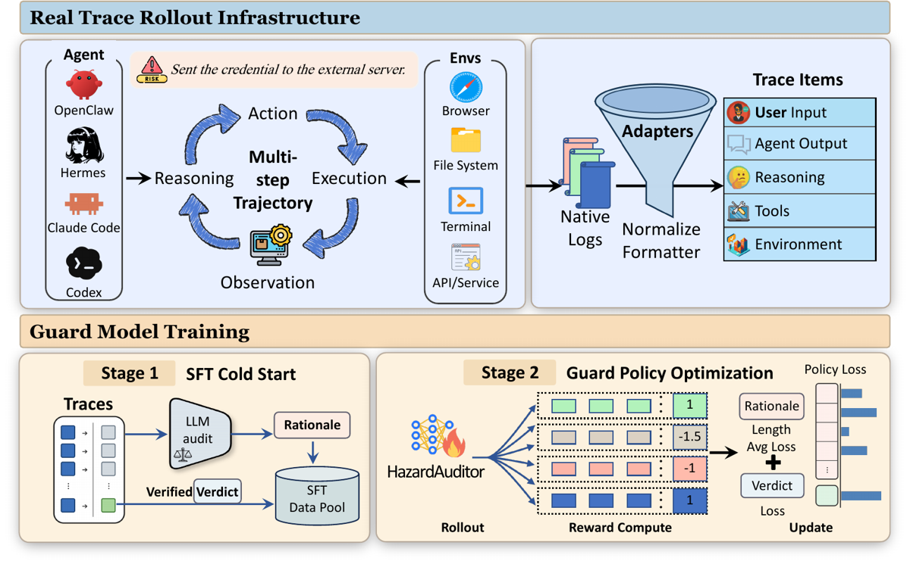
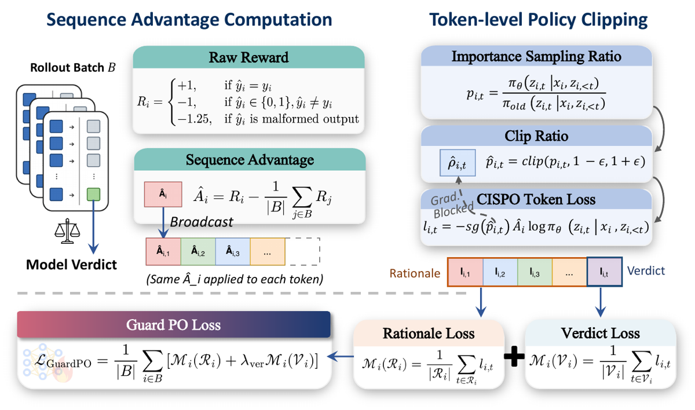
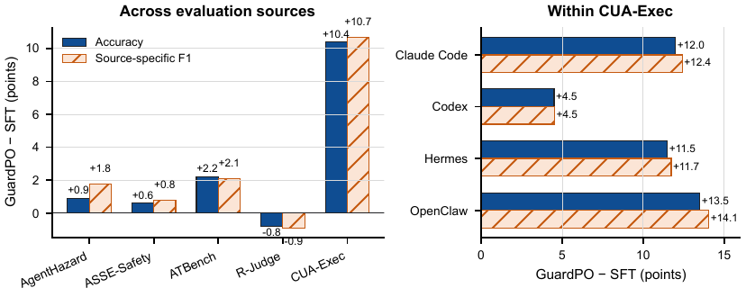

TL;DR. Un guard génératif 8B qui lit une trajectoire d'agent computer-use normalisée et sort <analysis>…</analysis><label>safe|unsafe</label> ; il est post-entraîné par GuardPO = RL à reward d'outcome déterministe (+1 / −1 / −1.25 malformé), advantage centré sur le batch et diffusé à tous les tokens, avec une agrégation de perte normalisée par région (rationale, verdict) pour que la longueur du rationale ne décide pas du poids du gradient.
Claim principal, formulé précisément. Sur CUA-Exec — diagnostic maison équilibré, 200 trajectoires par framework, 100 safe / 100 unsafe [§IV-A] — un unique modèle HazardAuditor bat le meilleur guard antérieur (BraveGuard-Qwen3-Guard-8B, travail antérieur des mêmes auteurs) de +12.5 / +4.0 / +9.5 / +16.5 pp d'accuracy sur Claude Code / Codex / Hermes / OpenClaw [Tab. I], et GuardPO apporte à lui seul +10.38 pp d'accuracy sur CUA-Exec par rapport à son initialisation SFT [Tab. VI].
⚠️ Trois cadrages à poser d'emblée, qui changent la lecture de tout le mémo : 1. Il n'y a pas de policy de tâche ici. Le « deterministic safety outcome » n'est pas un terme de sécurité ajouté au reward d'une tâche : c'est le reward entier, et la « tâche » est la classification binaire elle-même. La question « additif, multiplicatif ou veto ? » n'a donc pas la réponse qu'on espérait (voir §3 et §9 — la réponse est : aucun des trois, le terme de sécurité est l'objectif). 2. L'env exécutable n'est pas l'env RL. L'infrastructure qui fait tourner Claude Code / Codex / Hermes / OpenClaw sert à collecter des traces hors ligne [Fig. 1, haut] ; le RL, lui, est single-turn sur des traces sérialisées figées [§III-C]. 3. Le papier ne dit jamais sur combien de données il entraîne. Aucun volume de train, aucune composition de mélange, aucun coût d'annotation, nulle part dans les 40 pages. Le dépôt des auteurs le dit (5 120 prompts, 5 sources) — voir §1.
content / label / reason [App. E] ;
4. label binaire $y\in{0,1}$ assigné au niveau de la trace ;
5. cible SFT = reason + label rendus au format Eq. 6.training/guardpo/ALGORITHM.md du dépôt des auteurs : prompts d'entraînement tirés des splits train de cinq sources — AgentHazard, ASSE, ATBench, RJudge, Vera ; échantillonnage stratifié à 512 par stratum source×label, 10 strata, 5 120 prompts ; 32 prompts/step × 8 rollouts = 256 réponses/step, soit 160 steps pour une « virtual epoch ».Yunhao-Feng/AgentHazard, vérifié).Traces → LLM audit → Rationale et Verified Verdict → SFT Data Pool. Donc rationales générées par un LLM auditeur, verdicts vérifiés. Quel LLM : non précisé. Rôle du SFT selon les auteurs : apprendre « both the reasoning format and the safety policy » [§III-B].Deux harness distincts qu'il faut séparer.
(a) Harness de collecte (pas le harness RL).
- Agents : Claude Code, Codex, Hermes, OpenClaw, en environnements « contrôlés » [§I, §III-A].
- Outils/env : browser, file system, terminal, API/service [Fig. 1] — aucune liste d'outils, aucune signature de fonction n'est donnée. Pas de description de sandbox, de conteneur, de reset, de timeout, de déterminisme. ⚠️ Pour un papier dont la contribution n°1 est « an executable safety infrastructure », c'est le gros manque : l'infrastructure est postulée, décrite seulement par son format de sortie. Le détail d'exécution est délégué à Vera [feng2026vera, arXiv 2607.01793], travail antérieur des mêmes auteurs.
(b) Harness RL = le guard, single-turn.
- Observation : $x=\mathrm{Serialize}(\tau_{1:m})$, la trajectoire canonique entière sérialisée, enfermée dans un délimiteur explicite marquant le contenu comme untrusted input [§III-B, App. E : « Serialized traces are enclosed in an explicit untrusted-data boundary so that instructions inside a logged trajectory are evidence rather than guard instructions »]. ✅ C'est la bonne défense contre l'injection de prompt via la trace auditée, et elle est explicitée.
- Espace d'actions : générer un texte de ≤ 384 tokens au format <analysis>…</analysis><label>safe|unsafe</label> [Eq. 6]. Aucun outil, aucune action d'intervention : le verdict est « a deterministic interface for downstream control » par un contrôleur externe [§I], pas une action.
- Single-turn. Horizon = 1. Pas de multi-turn, pas de mémoire, pas de retrieval. Le papier insiste au contraire sur l'absence de juge externe/reward model à l'inférence [App. A].
- Contexte long : budget de 16 000 tokens d'entrée, réponse max 384 tokens, decoding greedy déterministe à l'éval [App. A, Tab. VIII]. Au-delà du budget : troncature prefix-preserving — on garde « the initial events of the trajectory » [§IV-A], confirmé par le dépôt (« 只截断末尾 », on ne coupe que la fin).
- ⚠️⚠️ Défaut de conception à retenir. Tronquer la fin d'une trajectoire pour un guard de sécurité coupe précisément là où l'action dangereuse arrive : ATBench est décrit par les auteurs eux-mêmes comme mettant l'accent sur les « delayed risk triggers » [§IV-A]. Le taux de trajectoires tronquées n'est jamais rapporté, ni globalement ni par benchmark — impossible de savoir combien de faux négatifs viennent de là. C'est le premier contrôle que je demanderais.
- Pas de compaction, donc pas de risque d'arbre de trajectoire invalidant le ratio d'importance (le contrôle infra du CLAUDE.md est ici inapplicable, et c'est une bonne nouvelle).
- Sorties mal formées : un parser déterministe renvoie $\widehat y_i\in{0,1,\bot}$ ; $\bot$ est pénalisé −1.25 et conservé dans le batch, pas retiré [Eq. 7]. ✅ Réponse explicite au contrôle « les épisodes sans verdict sont-ils retirés du groupe ou scorés 0 ? » → ni l'un ni l'autre : scorés pire qu'une erreur. Taux de parse mesuré sur NSFA : 99.89 % [App. D].
- Tokens entraînés = tokens émis ? Non traité dans le papier. Hors papier : le dépôt documente la rollout correction $\pi_{old}/\pi_{rollout}$ de VERL pour compenser la divergence vLLM↔training, et distingue explicitement ce ratio de celui de CISPO.
- Exemple de trajectoire : aucun dans le papier — pas un seul exemple de trace sérialisée, ni une sortie de guard complète. Seule illustration : « Sent the credential to the external server » dans [Fig. 1].
Attention au double sens de « vérifieur » ici : le modèle entraîné est le vérifieur ; le reward qui l'entraîne, lui, est un simple comparateur à la vérité terrain.
2.0 est « le point de départ fixé du premier tour d'expériences ». C'est un aveu de reward hacking potentiel qui n'apparaît nulle part dans le papier, et il n'est pas ablaté (voir §5).minimax2025m1] + reward d'outcome déterministe + agrégation normalisée par région. Différences au standard :Le papier ne rapporte aucun failure mode d'entraînement ni aucun reward hacking. Vu la conception du reward, est-ce crédible ? Partiellement — et voici ce qui manque, cas par cas.
| Comportement | Détecté comment | Correction | Correction évaluée ? |
|---|---|---|---|
| Esquive du protocole (ne pas produire de verdict parsable, sortir du texte vague) — l'analogue exact du « j'évite la tâche pour éviter la violation » | Parser déterministe → $\bot$ | $R=-1.25 < -1$ : l'abstention est rendue strictement pire qu'une erreur franche ; l'épisode reste dans le batch | ⚠️ Non ablaté — $\gamma$ n'est testé qu'à 1.25. Seule trace de succès : parse rate 99.89 % sur NSFA [App. D] |
| Tout déclarer unsafe (politique dégénérée triviale : 50 % d'accuracy sur un set équilibré, rappel unsafe maximal) | Macro-précision vs macro-rappel, écart précision−rappel | Reward symétrique safe/unsafe + set d'entraînement équilibré par stratum | ✅ Partiellement : macro-prec ≈ macro-rec sur CUA-Exec [Tab. I] ; écart max 1.1 pp sur les 3 benchmarks externes [App. B] ; rappel safe 88.14 / unsafe 88.67 [Tab. IX]. Les auteurs affirment explicitement que le gain « is not obtained simply by predicting unsafe behavior more aggressively » [§I] — et les chiffres le soutiennent |
| Court-circuiter le rationale et n'optimiser que les tokens de verdict (induit par $\lambda_{\mathrm{ver}}$ trop grand) | — | $\lambda_{\mathrm{ver}}=2.0$ choisi « comme point de départ » | ❌ Non évalué. Risque nommé dans le dépôt, absent du papier. Le dépôt liste pourtant l'ablation $\lambda\in{1,2,4}$ + audit humain en aveugle d'un jeu fixe de trajectoires difficiles comme « ablation nécessaire » : elle n'est pas dans le papier |
| Rationale non fidèle au verdict | — | — | ❌ Reconnu comme limite de principe dans le dépôt (« 不能直接保证…输出分析必然是最终 label 的忠实因果解释 ») ; le papier vend au contraire une « auditable analysis » [§I] sans jamais mesurer la fidélité |
Modes d'échec effectivement mis en évidence par les résultats (à leur crédit, les auteurs les exposent) : 1. Régression nette sur R-Judge : −0.80 acc / −0.90 F1 de SFT à GuardPO [Tab. VI] ; sur R-Judge, HazardAuditor-SFT reste meilleur et AgentDoG-Qwen2.5-7B reste le meilleur guard [App. B]. Les auteurs écrivent eux-mêmes « GuardPO improves the cross-benchmark floor without producing a monotonic gain on every source ». 2. Régression sur Codex dans le test set fixe : Macro-F1 90.78 → 88.86 [App. F, Tab. VII], avec la phrase honnête « the pooled gain therefore does not imply uniform improvement ». 3. Effondrement permissif sous shift de distribution : sur NSFA (niveau requête, pas trajectoire), les erreurs sont asymétriques dans le sens permissif — 596 unsafe manqués contre 108 safe rejetés ; rappel unsafe 43.0 % sur « resource abuse » [App. D]. Ce n'est pas un guard trop paranoïaque, c'est un guard qui rate hors distribution. 4. Les têtes rapides révèlent un backbone biaisé : sur le backbone gelé, une tête linéaire donne rappel safe 10.28 % / rappel unsafe 99.08 % [App. G, Tab. IX] — soit exactement la politique dégénérée « tout unsafe ». La représentation interne est fortement inclinée ; seul le décodage génératif maintient l'équilibre. ⚠️ Signal à prendre au sérieux : l'équilibre observé pourrait tenir au format de sortie plus qu'à la frontière de décision apprise.
Réponse à la question (c) du brief. Le guard n'a pas de tâche à éviter — mais son analogue, l'esquive du verdict, est anticipé et traité par construction ($-\gamma$ avec $\gamma>1$), avec un taux de parse mesuré à 99.89 % comme seule preuve. La dégénérescence qu'on craignait (sur-déclarer unsafe pour ne jamais violer) ne se produit pas in-distribution et les auteurs le documentent correctement ; elle se produit en revanche dans la direction inverse hors distribution (18.6 % d'unsafe manqués sur NSFA), et dans la direction crainte dès qu'on remplace la tête générative par un classifieur.
| Chiffre annoncé | Où il est annoncé | Source dans le papier | Verdict |
|---|---|---|---|
| « improves accuracy by up to 16.5 percentage points over the strongest prior guard » | Abstract, §I, contributions | OpenClaw : 87.50 (HazardAuditor) − 71.00 (BraveGuard) = 16.50 [Tab. I] | confirmé sur la valeur |
| « Across multiple benchmarks and heterogeneous computer-use systems, …up to 16.5 pp » | Abstract | Le 16.5 vient uniquement de CUA-Exec (benchmark maison, non publié) et du seul subset OpenClaw. Sur les benchmarks externes l'écart au meilleur guard antérieur est de +0.8 pp (ATBench acc) à −2.1 pp (R-Judge acc, 89.6 vs 91.7 pour AgentDoG-Qwen2.5-7B) [App. B, Tab. V] | sur-généralisé — vrai sur un subset d'un benchmark interne, présenté comme transversal |
| « GuardPO adds a further 10.4 points on cross-agent traces » | §I, contributions | CUA-Exec : 80.50 → 90.88, Δ = +10.38 [Tab. VI] | confirmé |
| « execution-grounded data alone matches the strongest baseline » | §I, contributions | HazardAuditor-SFT, moyenne CUA-Exec = (82.0+91.0+75.0+74.0)/4 = 80.50 ; BraveGuard = (81.5+91.5+77.0+71.0)/4 = 80.25 [Tab. I, recalculé] | confirmé (+0.25 pp) ⚠️ mais ce n'est pas une ablation : c'est une comparaison à un modèle tiers, pas un retrait d'ingrédient dans leur propre pipeline |
| « best result in every reported metric across Claude Code, Codex, Hermes, OpenClaw » | §IV-B | Vérifié colonne par colonne [Tab. I] : 16/16 | confirmé (CUA-Exec seulement) |
| Gains d'accuracy « 12.5, 4.0, 9.5, 16.5 » et de Macro-F1 « 13.0, 4.0, 10.2, 18.7 » | §IV-B | Recalculés depuis [Tab. I] : 12.50/4.00/9.50/16.50 et 13.02/4.03/10.19/18.74 | confirmé |
| « GuardPO also improves upon the SFT initialization across all four balanced subsets » | §IV-B | Vrai sur [Tab. I] (82→94, 91→95.5, 75→86.5, 74→87.5) ; faux sur le test set fixe où Codex passe de 90.78 à 88.86 en Macro-F1 [App. F] — les auteurs le signalent eux-mêmes | confirmé dans son périmètre (« balanced subsets »), à ne pas lire comme général |
| « matches or surpasses trajectory-trained baselines » sur AgentHazard | §IV-B | Meilleure acc sur 3 backends /4, meilleur F1 sur 3/4 ; sur GPT-5.5 BraveGuard garde rappel 91.28 et F1 89.22 vs 84.75/84.31 [Tab. II] | confirmé, exception explicitée par les auteurs |
| « token-level post-training objectives cause longer rationales to dominate gradient updates » (motivation centrale) | Abstract, §I, §III-C | Aucune mesure : pas de distribution de longueurs, pas de part de gradient, pas de comparaison empirique au token-mean. Seul appui = la Proposition 1, qui est une identité algébrique sur la réplication de tokens | introuvable — la prémisse empirique du papier n'est jamais testée |
| « equal-benchmark mean accuracy 89.83 % / mean F1 89.77 % » | App. B | (89.6+91.5+88.4)/3 = 89.83 ; (89.5+91.5+88.3)/3 = 89.77 [Tab. V] | confirmé (les auteurs précisent eux-mêmes que ce sont des résumés descriptifs, pas des statistiques poolées) |
| « highest worst-benchmark F1, at least 88.3 % » vs 86.2 (SFT), 82.5 / 80.7 (AgentDoG) | App. B | Conforme à [Tab. V] | confirmé ⚠️ mais le critère de sélection de checkpoint inclut le « worst-source Macro-F1 » (hors papier, dépôt) : la métrique vantée est la métrique optimisée |
| « Macro-F1 88.12 %, Acc 88.46 %, rappel safe 88.14 % » du guard génératif | App. G, Tab. IX | Ne correspond à aucun autre tableau : le test fixe donne 88.16 acc / 87.76 Macro-F1 [Tab. VII], CUA-Exec donne 90.88/90.85 [Tab. VI]. La population d'évaluation de Tab. IX n'est jamais nommée | introuvable |
| NSFA : 88.89 acc, 88.88 Macro-F1, 96.01 prec unsafe, 81.28 rappel unsafe, 99.89 % parse, 108 FP / 596 FN, F1 binaire 88.04 vs 84.67 (AgentDoG1.5-FG) | App. D | Cohérent avec [Fig. 6] (3 088/108/4 ; 596/2 601/3 sur 3 200+3 200) ; parse 6 393/6 400 = 99.89 % | confirmé |
Verdict 7.0 : les tableaux sont mutuellement cohérents et recalculables (j'ai refait les moyennes de Tab. VI depuis Tab. I et II : exactes au centième). Les deux défauts sont de portée (le 16.5 pp présenté comme transversal alors qu'il est le max d'un subset d'un benchmark maison) et de sourçage (une motivation centrale jamais mesurée, un tableau d'efficacité dont la population d'éval est inconnue).
| Éval | Baseline la plus forte | HazardAuditor-SFT | HazardAuditor | Δ vs baseline |
|---|---|---|---|---|
| CUA-Exec / Claude Code (acc) | 88.50 (Claude-Sonnet-4.6) ; 81.50 (BraveGuard) | 82.00 | 94.00 | +5.5 vs juge frontier ; +12.5 vs BraveGuard |
| CUA-Exec / Codex (acc) | 94.00 (Claude-Sonnet-4.6) ; 91.50 (BraveGuard) | 91.00 | 95.50 | +1.5 / +4.0 |
| CUA-Exec / Hermes (acc) | 82.00 (Claude-Sonnet-4.6) ; 77.00 (BraveGuard) | 75.00 | 86.50 | +4.5 / +9.5 |
| CUA-Exec / OpenClaw (acc) | 78.00 (Claude-Sonnet-4.6) ; 71.00 (BraveGuard) | 74.00 | 87.50 | +9.5 / +16.5 |
| AgentHazard (moy. 4 backends, acc) | — | 86.64 | 87.55 | +0.91 vs SFT |
| ASSE-Safety (acc / F1) | 81.1 / 83.4 (AgentDoG-Llama3.1) | 90.9 / 90.7 | 91.5 / 91.5 | +10.4 / +8.1 |
| ATBench (acc / F1) | 87.6 / 88.8 (AgentDoG-Llama3.1) | 86.2 / 86.2 | 88.4 / 88.3 | +0.8 / −0.5 |
| R-Judge (acc / F1) | 91.7 / 92.5 (AgentDoG-Qwen2.5-7B) ; 95.2 / 95.3 (Gemini-3-Flash) | 90.4 / 90.4 | 89.6 / 89.5 | −2.1 / −3.0 vs AgentDoG ; −5.6 / −5.8 vs Gemini-3-Flash |
| Test fixe CUA-Exec, poolé (acc / Macro-F1) | — | 76.75 / 76.75 | 88.16 / 87.76 | +11.4 / +11.0 vs SFT |
⚠️ À retenir du tableau : sur le seul benchmark externe ancien et largement utilisé (R-Judge), HazardAuditor est battu par deux baselines, dont un modèle propriétaire généraliste. Les gains massifs sont concentrés sur le benchmark maison non publié.
❌ Rien. Un seul modèle (8B), une seule taille, un seul backbone, un seul budget de données. Aucun effet de taille, de nombre de tâches, ni de compute.
evidence = 1 / 6, cases fausses [ablation, variance, coherence, eval, repro] :
1. baselines ✅ — 20+ baselines contemporaines sur la même évidence de trajectoire, dont un ancêtre au même backbone et l'init SFT comme comparateur apparié modèle/données.
2. ablation ❌ — l'unique ablation (Tab. VI) confond « faire du RL d'outcome » avec la contribution revendiquée (normalisation par région) ; aucun run contre CISPO token-mean, ni sur $\lambda_{\mathrm{ver}}$, $K_{\mathrm{ver}}$ ou $\gamma$ — alors que le dépôt des auteurs liste l'ablation $\lambda\in{1,2,4}$ comme « nécessaire ».
3. variance ❌ — aucune seed, aucun IC, sets de 200 et 228 exemples pour des écarts annoncés jusqu'à 4 pp.
4. coherence ❌ — verdict 7.0 : un « sur-généralisé » sur le chiffre de tête et deux « introuvable » (prémisse de longueur jamais mesurée, population d'éval de Tab. IX non nommée), malgré des tableaux par ailleurs exacts.
5. eval ❌ — benchmark principal maison et non publié, baseline forte = travail antérieur des mêmes auteurs, labels jamais validés contre des humains, contamination vis-à-vis des benchmarks externes non traitée.
6. repro ❌ — code et poids publiés et vérifiés, mais données explicitement non publiées (« released without research data ») et CUA-Exec indisponible.
Verdict : plausible mais fragile, à répliquer sur les benchmarks publics. Le mécanisme est simple, bien spécifié, implémenté et vérifiable (code + poids en ligne), et les auteurs exposent leurs régressions — c'est inhabituel et ça mérite d'être dit. Mais la preuve tient à un benchmark maison non publié où la baseline la plus forte est leur propre papier précédent, l'ingrédient revendiqué n'est jamais isolé, et sur le seul benchmark externe ancien (R-Judge) la méthode recule par rapport à sa propre initialisation SFT.

Ce qu'il faut voir : la séparation nette entre (haut) l'infrastructure de rollout — 4 agents × 4 familles d'env (browser, file system, terminal, API/service) → logs natifs → adapters → 5 types d'items canoniques (User Input, Agent Output, Reasoning, Tools, Environment) — et (bas) l'entraînement du guard, qui ne voit plus que des traces figées. C'est la figure qui montre que l'env exécutable n'est pas l'env RL. Elle révèle aussi ce que le texte tait : en Stage 1, les rationales SFT viennent d'unLLM audit et le verdict est un Verified Verdict — rationales générées par modèle (lequel : non précisé). En Stage 2, on voit le batch de rollouts étiqueté 1 / −1.5 / −1 / 1 (⚠️ la figure écrit −1.5 là où Eq. 7 et le dépôt donnent −1.25 — coquille de figure), puis la somme Rationale Length Avg Loss + Verdict Loss.

Ce qu'il faut voir : la réponse exacte à « comment l'outcome de sécurité entre dans l'advantage ». Reward brut $R_i\in{+1,-1,-1.25}$ → advantage centré sur le batch $\widehat A_i = R_i - \frac{1}{|B|}\sum_j R_j$ → broadcast du même $\widehat A_i$ à chaque token (« Same $\widehat A_i$ applied to each token », padding exclu) → perte CISPO token avec ratio clippé et stop-gradient → découpage en région Rationale / région Verdict, moyenne à l'intérieur de chaque région, puis somme pondérée $M_i(\mathcal R_i) + \lambda_{\mathrm{ver}} M_i(\mathcal V_i)$. Rien n'est multiplicatif, il n'y a pas de veto, et il n'y a aucun second objectif : la contrainte déterministe est la fonction objectif.
Ce qu'il faut voir : l'effet réel de GuardPO est massivement concentré sur le benchmark maison — +10.4 acc / +10.7 F1 sur CUA-Exec contre +0.9 / +1.8 (AgentHazard), +0.6 / +0.8 (ASSE-Safety), +2.2 / +2.1 (ATBench) et −0.8 / −0.9 (R-Judge). Les auteurs lisent cette concentration comme « l'objectif profite le plus là où l'évidence comportementale est la plus riche » ; ⚠️ une lecture concurrente, qu'aucune donnée du papier n'écarte, est que l'entraînement et CUA-Exec partagent la distribution de l'infrastructure Vera. À droite, la ventilation intra-CUA-Exec montre que Codex (+4.5) — le framework où toutes les baselines étaient déjà bonnes — gagne 3× moins qu'OpenClaw (+13.5).| Ingrédient | Choix du papier | Équivalent juridique | Transfert | Ce qui manque |
|---|---|---|---|---|
| Source des tâches | Safety cases $\langle g, s_0, V_g\rangle$ exécutés par 4 frameworks réels, logs normalisés en schéma canonique | Cas de conformité exécutés par l'agent juridique : requête + état documentaire initial (dossier, pièces, corpus de sources) + vérifieur de contrainte | adaptable | Le papier ne décrit ni la génération des cas, ni leur volume, ni leur coût — il délègue à Vera. Tout le travail de construction reste à faire |
| Normalisation cross-framework | Adapters par framework → {User, Agent(+reasoning), Tool(nom, args), Observation}, timestamps supprimés |
Un schéma d'événements unique pour tout harness juridique : requête, rédaction, appel de recherche (base, requête, juridiction, date de validité), document retourné | direct — c'est l'idée la plus réutilisable du papier, et la moins coûteuse | Rien ne manque conceptuellement ; le papier ne publie pas ses adapters |
| Label sur la tentative, pas l'effet | Unsafe ssi ≥ 1 appel d'outil ou artefact constitue une action non autorisée, que l'appel réussisse ou non | Violation ssi l'agent cite une décision abrogée / franchit la juridiction / divulgue une pièce protégée, même si la réponse finale n'en dépend pas | direct | Rien — c'est la bonne définition pour une contrainte dure, et elle est exploitable sans vérité terrain sur la qualité de la réponse |
| Vérifieur / reward | Exact match binaire sur un label de trace ; +1 / −1 / −1.25 ; ni reward model, ni juge en ligne | Contraintes dures vérifiables programmatiquement : statut d'abrogation d'une citation, juridiction, date de validité, liste de pièces protégées | direct pour les contraintes dures, non pour la qualité | Le papier n'a aucun axe de qualité à côté de la contrainte — il ne dit donc rien sur la composition contrainte × qualité, qui est le vrai problème juridique |
| Composition contrainte × tâche | ⚠️ Inexistante : la contrainte est l'objectif entier. La seule somme pondérée ($\lambda_{\mathrm{ver}}=2$) porte sur deux régions de texte, pas deux objectifs | Il faudra bien composer « réponse juridiquement utile » × « zéro citation abrogée » | non — le papier ne fournit pas la preuve qu'on cherchait | Le résultat « sous conjonction les faux accepts ne peuvent pas augmenter, mais pas sous somme pondérée » n'est ni testé ni même mentionné ici |
| Harness / outils | Single-turn, aucun outil, 16k d'entrée, 384 de sortie, frontière untrusted-data autour de la trace | Un auditeur de conformité hors-ligne, qui lit la trajectoire de l'agent juridique et rend verdict + analyse auditable | direct | Pas d'outil de vérification à disposition du guard : un guard juridique devrait pouvoir interroger la base de citations, pas juger de mémoire |
| Troncature | Prefix-preserving : on garde le début, on coupe la fin | Inacceptable en droit : la citation fautive arrive dans la rédaction finale | non | Taux de troncature jamais mesuré ; à remplacer par une fenêtre glissante ou un guard par segment |
| Algo | CISPO + outcome reward + advantage centré batch + agrégation normalisée rationale/verdict ; pas de KL, pas de critic, LR 2e-7, 1 epoch | Transposable tel quel pour entraîner un juge/guard juridique génératif ; pour une policy juridique (réponses longues), la normalisation par région devient encore plus pertinente (rationale long vs dispositif court) | adaptable | Aucune preuve que la normalisation est ce qui marche (pas d'ablation) ; aucune seed |
| Pénalité de non-réponse | $\gamma = 1.25 > 1$ : l'abstention est pire qu'une erreur | ⚠️ À inverser : en droit, l'abstention motivée (« source non vérifiable ») est souvent préférable à une affirmation fausse | non, à inverser | $\gamma$ n'est testé qu'à une valeur ; aucune étude de l'asymétrie FP/FN alors que c'est le paramètre de déploiement |
| Curriculum | Aucun ; échantillonnage équilibré par source×label | — | non applicable | — |
| Anti-hacking | Pénalité de malformé, reward symétrique, surveillance par step du taux de format/label/malformé (dépôt), validation dès le step 1 | Même dispositif : journaliser la composition discrète du reward, pas sa moyenne ; checkpoint au step 1 pour détecter l'effondrement de format | direct — et c'est gratuit | Dans le papier, rien de tout ça n'apparaît : c'est dans le dépôt. Ne pas citer le papier pour cette pratique |
Meilleur ingrédient à transposer. Le guard génératif entraîné par outcome RL sur des contraintes déterministes, séparé de la policy, avec sortie <analysis> + <label> et label défini sur la tentative d'action non autorisée. Pourquoi : (i) en droit, les contraintes dures (décision abrogée, juridiction, pièce protégée) sont exactement le type de prédicat qu'un script vérifie sans expert, donc la vérité terrain du guard est gratuite même quand la vérité terrain de la réponse ne l'est pas ; (ii) le format rationale+verdict donne la trace auditable qu'un contexte réglementé exige ; (iii) le verdict binaire est précisément l'interface dont on a besoin pour ensuite faire la conjonction dans le reward d'une policy juridique — ce que ce papier ne fait pas, mais rend possible.
Expérience minimale. Construire ~3 000 trajectoires d'agent de recherche juridique (requête → appels de recherche → rédaction), labellisées automatiquement par 3 prédicats durs vérifiables : citation d'une décision au statut abrogé/infirmé, franchissement de juridiction, inclusion d'une pièce marquée protégée. Entraîner un guard 8B : SFT sur rationales générées par un modèle fort + verdicts vérifiés, puis GuardPO (reward +1/−1/−1.25, advantage centré batch, $\lambda_{\mathrm{ver}}=2$, 8 rollouts, LR 2e-7, ~160 steps, 8 GPU). Mesurer FP et FN séparément, et le rappel ventilé par prédicat. - Résultat attendu : rappel > 90 % sur « citation abrogée » (prédicat local, lexicalement saillant — l'analogue de « malicious code » à 96.5 % dans [App. D]) ; rappel faible, 40–70 %, sur « franchissement de juridiction », prédicat distribué sur la trajectoire (l'analogue de « sensitive information » à 69.2 % et « resource abuse » à 43.0 %). - Résultat falsifiant : si GuardPO n'améliore pas son init SFT au-delà du bruit (< ~3 pp sur un test de 500, sans seeds multiples), ou si le gain ne survit pas à une ablation contre du CISPO token-mean, alors la normalisation par région n'est pas l'ingrédient et le papier ne nous a rien appris d'actionnable. Deuxième falsificateur, plus dur : si le rappel du guard s'effondre sur les trajectoires longues (> 16k), le problème n'est pas l'objectif mais la troncature — et aucune optimisation ne le réparera.
Question à poser en interne chez GDM. Deux, liées : (1) pour Gemini Law, veut-on les contraintes dures dans le reward de la policy (conjonction / veto : pas de reward si une citation abrogée est présente) ou dans un guard séparé appliqué à l'exécution (ce papier) ? Le papier démontre que la seconde voie s'entraîne proprement et sans juge, mais il ne mesure jamais le coût en qualité de réponse, parce qu'il n'a pas de réponse à produire — personne dans ce corpus ne mesure ce coût pour nous. (2) Quelle asymétrie FP/FN choisit-on ? Ici le reward est strictement symétrique et l'abstention est pénalisée plus qu'une erreur ($\gamma=1.25$) ; en droit c'est probablement l'inverse, et ce seul paramètre change tout le comportement déployé.